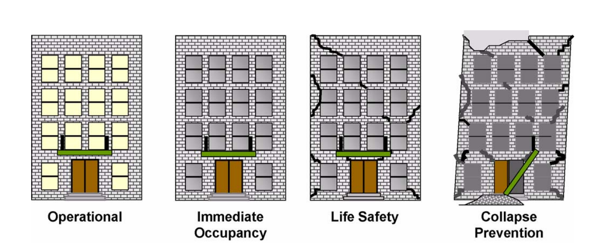

SEISMIC LOAD CONSIDERATION IN DESIGN IN ZAMBIA
In Zambia, seismic load considerations in infrastructure design have lingered on the periphery of consciousness. The absence of a significant earthquake event in recent memory has perhaps lulled many design engineers into a false sense of immunity. However, a closer look reveals something that demands our immediate attention.
In many design codes, the design for earthquake loads is done based on a probabilistic earthquake hazard assessment. For example, In Eurocode 8 (EC8), an earthquake with a return period of 475 years is used for the Ultimate Limit State, while 95 years is considered for the Serviceability Limit State.
The recently published Global Earthquake Model reveals significant levels of seismicity for the above probability of occurrence. In certain areas in the northern part of the country, peak ground accelerations as high as 0.2g are foreseen for the 475-year return period. This level of seismicity is by no means small to be ignored.
One of the reasons for the insufficient attention to seismic considerations is the absence of a national building code or an active regulatory framework. A number of African countries such as South Africa, Kenya, Algeria, Egypt, Ethiopia, Ghana and Uganda have been enforcing this for over three decades. It is noteworthy that South Africa, a country which has less seismicity than Zambia, has been enforcing the consideration of earthquake loads.
Earthquakes have occurred in Zambia before. Their impact may not have been felt because of the nature of structures (low vulnerability) or the economic activity (low exposure) in those regions that were affected. However, as our nation is undergoing further development and our structures are reaching greater heights, both seismic vulnerability and exposure rise are on the rise. These two factors combined with the clearly present seismic hazard constitute a significant seismic risk.
As custodians of public safety, civil engineers bear the responsibility of fortifying structures against the unpredictable forces of nature. Neglecting the seismic risk poses a great threat to the future, one that could end in catastrophe. As designers, our structures are not mere reflections of our present; they are legacies that will outlast us. Ensuring their resilience is a moral obligation to safeguarding lives today and tomorrow.